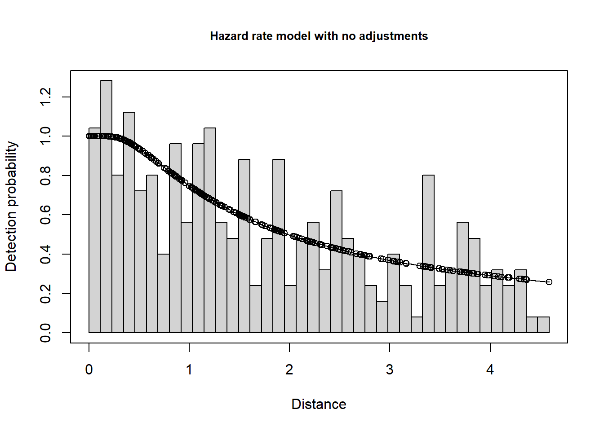

Centre for Research into Ecological and Environmental Modelling University of St Andrews
Modified
January 2024
Solution
Analysis of animals that occur in groups
Analysis of Risso’s dolphin survey data
Naive analysis
If we apply distance sampling to the perpendicular distances recorded to the centre of the detected groups, we will estimate the abundance of groups (\(\widehat{N_s}\)), corrected for imperfect detectability. To convert abundance of groups (\(\widehat{N_s}\)) to abundance of individuals (\(\widehat{N}\)), we multiply:
\[\widehat{N_s} \times \bar{s} = \widehat{N}\] where {s} is the average size of groups in the population (Buckland et al., 2015, sec. 6.3.1.3). We do not know the average size of groups in the population, but rather we estimate it by using the average size of our detected groups.
Because there exists a field named size in the risso data frame, the ds software knows observations were of groups. Output from ds will create estimates both of \(\widehat{N_s}\) and \(\widehat{N}\) (if study region Area is also provided), and companion estimates \(\widehat{D_s}\) and \(\widehat{D}\).
Fit the three key function detection models to the data in the usual manner and perform model selection to choose a most appropriate model (also perform absolute goodness of fit, courtesy of summarize_ds_models).
rissogithub <-"https://raw.githubusercontent.com/distanceworkshops/async2024-2/main/09-clusters/R-prac/Risso_survey.csv"risso <-read.csv(rissogithub)aveobs.size <-round(mean(risso$size),2)library(Distance)naive.uniform <-ds(data=risso, key="unif", adjustment="cos")naive.hn <-ds(data=risso, key="hn", adjustment ="cos") naive.hr <-ds(data=risso, key="hr", adjustment =NULL) # no adjustments for simplicityknitr::kable(summarize_ds_models(naive.uniform, naive.hn, naive.hr, output="plain"),digits=3, caption="Model selection for models not considering size bias.")
Model selection for models not considering size bias.
Model
Key function
Formula
C-vM \(p\)-value
Average detectability
se(Average detectability)
Delta AIC
2
naive.hn
Half-normal with cosine adjustment term of order 2
~1
0.981
0.548
0.047
0.000
3
naive.hr
Hazard-rate
~1
0.981
0.531
0.070
1.264
1
naive.uniform
Uniform with cosine adjustment terms of order 1,2
NA
0.902
0.581
0.044
2.497
All three models fit. It is a close AIC contest between the unadjusted hazard rate and the half normal with one adjustment. For our purposes, let’s focus upon the hazard rate model, although the inference will be virtually identical were we to use the half normal model for our inference.
plot(naive.hr, nc=40, main="Hazard rate model with no adjustments")

A brief look at the data summary coming from the fitted model. Evaluate the number of detections and numbers of replicate transects.
knitr::kable(naive.hr$dht$clusters$summary)
Region
Area
CoveredArea
Effort
n
k
ER
se.ER
cv.ER
region
1300000
143145.6
15600
265
12
0.0169872
0.0008546
0.0503073
Examine the estimates of abundance of clusters (\(\widehat{N_s}\)) from the hazard rate model. Note how the following code carefully extracts estimates only for clusters. We could do the same for the estimated density of clusters, but omit that here.
knitr::kable(naive.hr$dht$clusters$N)
Label
Estimate
se
cv
lcl
ucl
df
Total
4531.354
642.8413
0.1418652
3431.138
5984.361
230.2186
Compare this estimate against the number of clusters (4333) in the population we simulated.
How well did this model estimate the number of individuals (\(\widehat{N}\)) in the population?
knitr::kable(naive.hr$dht$individuals$N)
Label
Estimate
se
cv
lcl
ucl
df
Total
32677.05
4770.298
0.1459831
24537.47
43516.69
186.701
Compare this estimate against the number of individuals in the population (26000). The reason for this lies in the estimation of average group size in the population, also estimated in the model object by the average size of detected groups:
knitr::kable(naive.hr$dht$Expected.S)
Region
Expected.S
se.Expected.S
Total
7.211321
0.138989
Compare this estimate against the estimate we produced during our exploratory data analysis plotting the histogram of sizes of observed groups: 7.21.
Analysis adjusting for size bias problem
Because we recognize that the size of clusters influences probability of their inclusion in our sample, we can incorporate this concept in the detection function model we construct. As introduced in Module 8, we can add covariates in addition to perpendicular distance into our detection function models. This is what we will do to perhaps overcome the size bias problem.
Aside: average group size as derived parameter
When using group size as a covariate we no longer estimate average group size directly from observed group sizes. Instead, the ds function uses something called Horwitz-Thompson-like estimators to first estimate the abundance of groups. Then, using the same estimation approach, ds estimates the abundance of individuals.
After the two estimates \(\widehat{N_s}\) and \(\widehat{N}\) are produced, their ratio is computed. This ratio is a less biased estimate of average group size in the population.
Compare relative and absolute fit of hazard rate and half normal key functions that include the size covariate.
knitr::kable(summarize_ds_models(clever.hn, clever.hr, output="plain"), digits=3,caption ="Comparison of hazard rate and half normal models incorporating group size as covariate.")
Comparison of hazard rate and half normal models incorporating group size as covariate.
Model
Key function
Formula
C-vM \(p\)-value
Average detectability
se(Average detectability)
Delta AIC
2
clever.hr
Hazard-rate
~size
0.880
0.503
0.067
0.000
1
clever.hn
Half-normal
~size
0.423
0.614
0.032
3.421
Using the best model based upon AIC, repeat the model output interrogation you conducted (above) with the naive models: examine the estimates of \(\widehat{N_s}\), \(\widehat{N}\) and \(E(s)\) (defined as the expected value of group size in the population):
knitr::kable(clever.hr$dht$clusters$N)
Label
Estimate
se
cv
lcl
ucl
df
Total
4779.932
659.8679
0.1380496
3645.556
6267.288
202.2487
Compare this estimate against the number of clusters (4333) in the population we simulated.
How well did this model estimate the number of individuals (\(\widehat{N}\)) in the population?
knitr::kable(clever.hr$dht$individuals$N)
Label
Estimate
se
cv
lcl
ucl
df
Total
27449.21
2743.127
0.0999347
22541.21
33425.84
148.0588
Compare this estimate against the number of individuals in the population (26000). The reason for this lies in the estimation of average group size in the population, also estimated in the model object by the average size of detected groups:
knitr::kable(clever.hr$dht$Expected.S)
Region
Expected.S
se.Expected.S
Total
5.742594
0.4046648
Conclusion
Estimation of number of clusters (\(\widehat{N_s}\)) is close to the truth when not including cluster size as a covariate.
However, average size of clusters in the sample is an over-estimate of the average size of groups in the population.
This is because small groups at great distances are not detected, hence not included in the sample.
Because of this bias in estimate average cluster size, the estimate of number of individuals in the population (\(\widehat{N}\)) is positively biased.
This size bias can be reduced by incorporating cluster size as a covariate in the detection function.
When this was done, the estimated number of individuals in the population (\(\widehat{N}\)) was closer to the true population size.
In general, the effect of size bias is magnified as the variability of cluster sizes in the population increases.
There is another way of dealing with size bias, regressing ln(cluster size) against estimated detection probability for the detection distance \(\widehat{g(x)}\). This method is implemented in the Distance for Windows software.
References
Buckland, S. T., Rexstad, E. A., Marques, T. A., & Oedekoven, C. S. (2015). Distance sampling: Methods and applications. Springer.